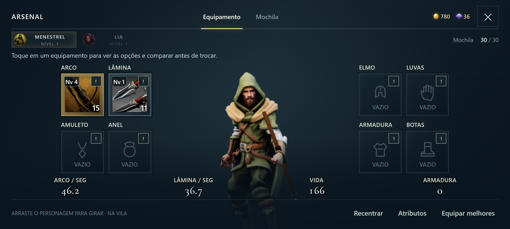
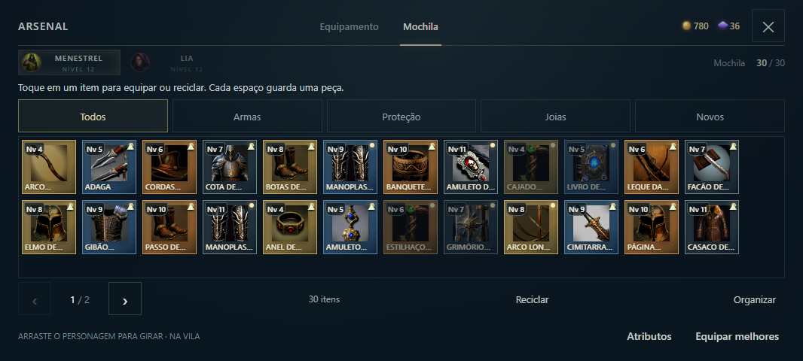

Uma mochila com espaços menores e fixos, reciclagem à vista e enquadramento restaurado ao abrir o Arsenal.
Gire a tela e continue
O personagem permanece enquadrado ao alternar entre retrato e paisagem. O zoom fica dentro de uma faixa segura. Cada abertura do menu começa na vista padrão, e o botão Recentrar permite restaurá-la a qualquer momento.

Vista após alternar repetidamente entre retrato e paisagem.
Mochila de inventário
Os ícones usam espaços compactos de tamanho fixo. Os espaços livres mostram a capacidade restante; as páginas aparecem quando necessário. Toque em uma peça para ver o nome completo, os atributos e as ações disponíveis.

Mais peças visíveis, sem ampliar os ícones para ocupar a tela.
Reciclar sem procurar
Reciclar aparece na barra da mochila e nos detalhes da peça, junto de Equipar. O botão informa quantos fragmentos você recebe. Itens raros e lendários pedem uma confirmação antes de serem reciclados.
Capturas da interface na bancada de testes. Nove resoluções, zoom, ciclos de rotação e reabertura verificados no navegador. Teste em aparelho físico pendente.